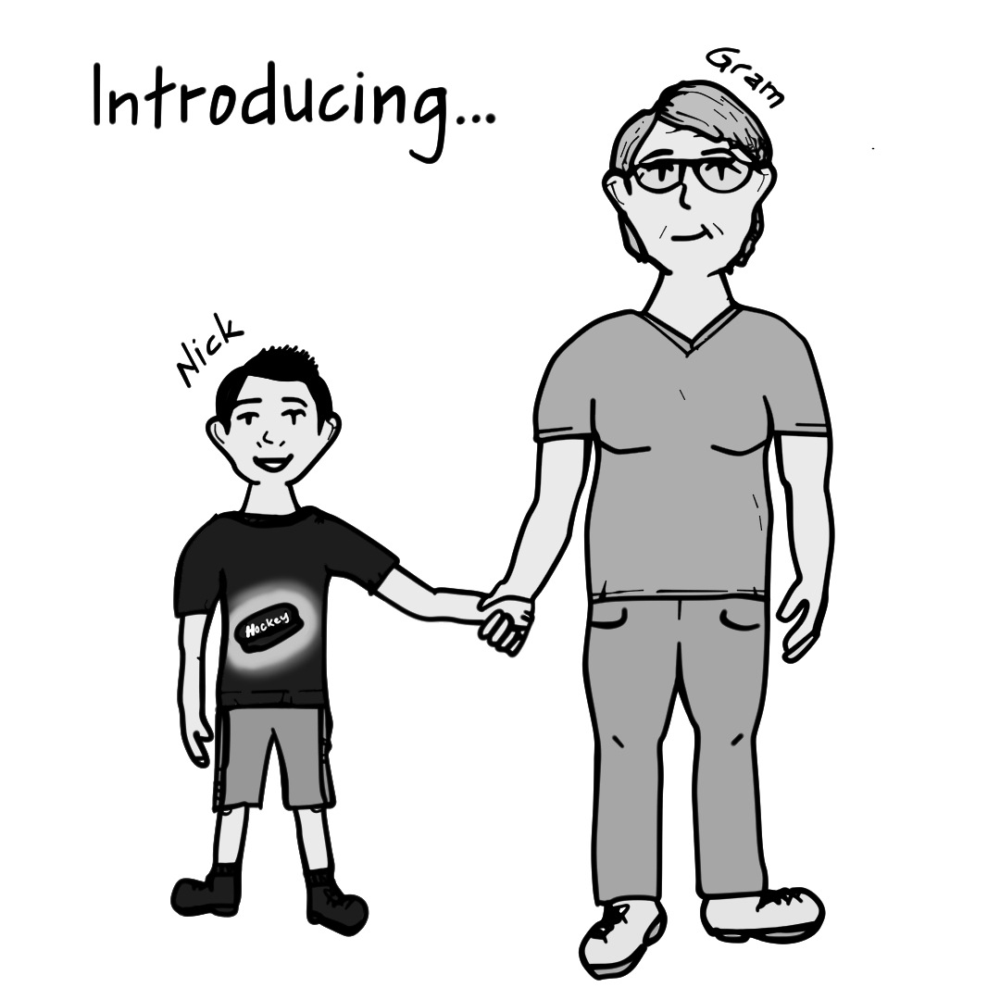
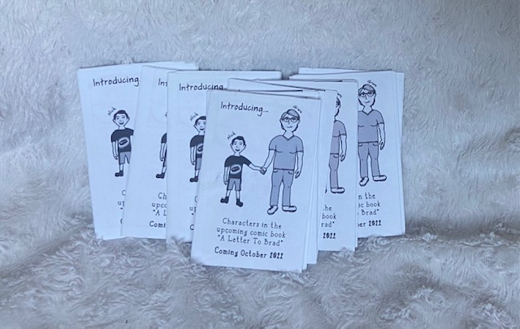
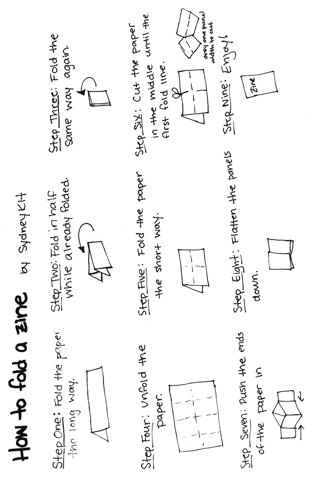

"A Letter to Brad" Zine
How to view the introductory zine for free
May 20th, 2022
An Introduction to the Introductory Zine
Making digital comics is intimidating to those artists that started out making comics traditionally, but what about the artists that started digitally switching to traditional? No more "ctrl+z", no more zooming into your detailed project, no more fancy brushes (unless you spend entire paychecks). So what did this digital artist do when she started a traditional comic? Practiced!
Practice! Practice! Practice!
I knew that I needed the practice when it came to making traditioanl omics andd that I had several upcoming opportunities to get me work out into the world, so the natural answer was to make a free zine. Who doesn't love free art? Creating this sinze gave me the opportunity to practice my character design skills, my traditional comic making skills, and find questions I needed to have answered by the writer before starting the final project.
What is a Zine?
"A zine is a self-published, non-commercial print-work that is typically produced in small, limited batches" according to The Bindery. In my case, I created a six paged comic, with two panels on each page, that introduced the characters. I then printed them out on my printer at home and folded them to appear like a mini comic book. It's an easy process, one that you can replicate now!
How to Make the Zine at Home
Download the zine. Once you have the page printed you can follow these guidelines:
More of a visual learner? No problem! Watch my How To Fold A Zine video.
Let Us Know What You Think!
Candy and I are working hard on bringing this story to life and would love to hear from you! Find us on Instagram and Facebook by searching @Sydney.Kit.Anim or @blewprince, or through the contact page.
Want More?
I have availability for commissions and still have items left in my shop, such as blank greeting cards, original paintings, and more.